South America · Colombia · Minca
Minca, November 2017
Minca is a village in the green hills above Santa Marta, a cooler and quieter place than the coast. I arrived on the afternoon of November 26, 2017, after Tayrona, and from there I was alone. I spent the 27th on a motorbike tour that the owner of my hostel arranged, and on the 28th I left for Palomino.
My conclusion up front: Minca is worth a night or two if you want the hills, the water and the quiet. The day on the motorbike showed me a stream, a coffee stop and three viewpoints, and I did not need more than that. I do not remember the name of the hostel, what I paid for it or for the tour, or which waterfall I stood at. I would rather say so than guess.
The times are my phone's clock, and Google Photos stores them in Colombian time (GMT-5). The boxes hold research I did in November 2026, each with a source and a date, so you can tell it apart from what I remember.
Arriving, the evening of the 26th
I came up from Santa Marta by what I believe was a bus or a minivan, but I do not remember it, and I have no photo of the ride. Google Photos places my first photo, from 16:53 on the 26th, in the village itself. That is the hillside photo at the end of the previous chapter. I do not remember the hostel, the room, or what I did that evening.
What I found: the usual way is a shared white minivan, a colectivo, from behind the public market in Santa Marta (Carrera 9 and Calle 12). It costs about 10,000 pesos and takes about 45 minutes, but it leaves only when full, so the wait can add 30 to 40 minutes. A taxi to that stop is about 10,000 pesos from the centre and about 15,000 from the bus terminal. The page I used was last updated on November 2, 2025 (Gecko Routes).
What I did not find: the 2017 price, or an official fare list. Prices in small vans change without notice, so ask before you board.
The 27th: the motorbike tour
The owner of the hostel arranged a motorbike tour for me, and that is how I spent the day. I do not remember the route, the guide, the price or the length of the ride. My photos give the order of the day, and they are all I have.
The stream, about 14:00
From 13:57 to 14:21 I took four photos at a stream in the forest: an old wooden footbridge over a rock channel with fast white water, a cascade into a brown pool, a smaller fall with a sandy bank, and a wide pool with two thin falls running into it. Google Photos pins the first one in the village, but a village pin is not exact, so I do not name the place.
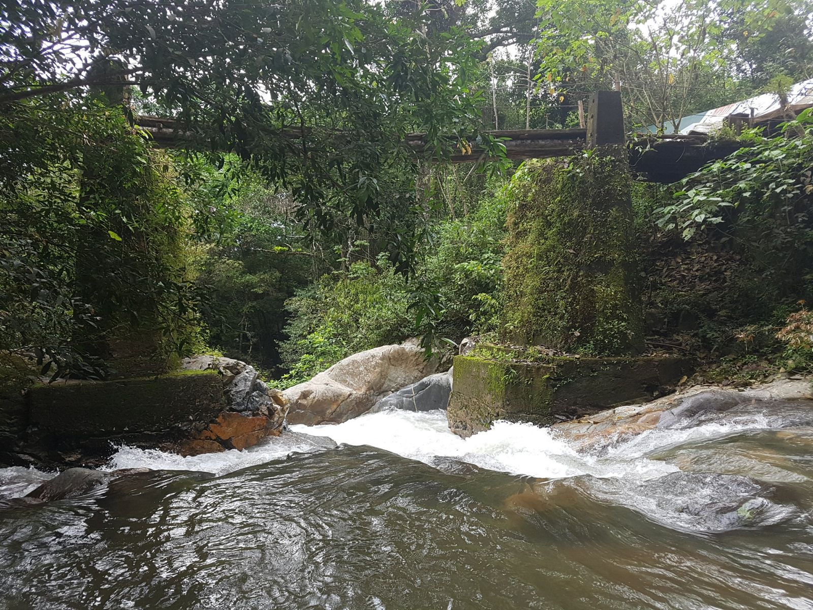
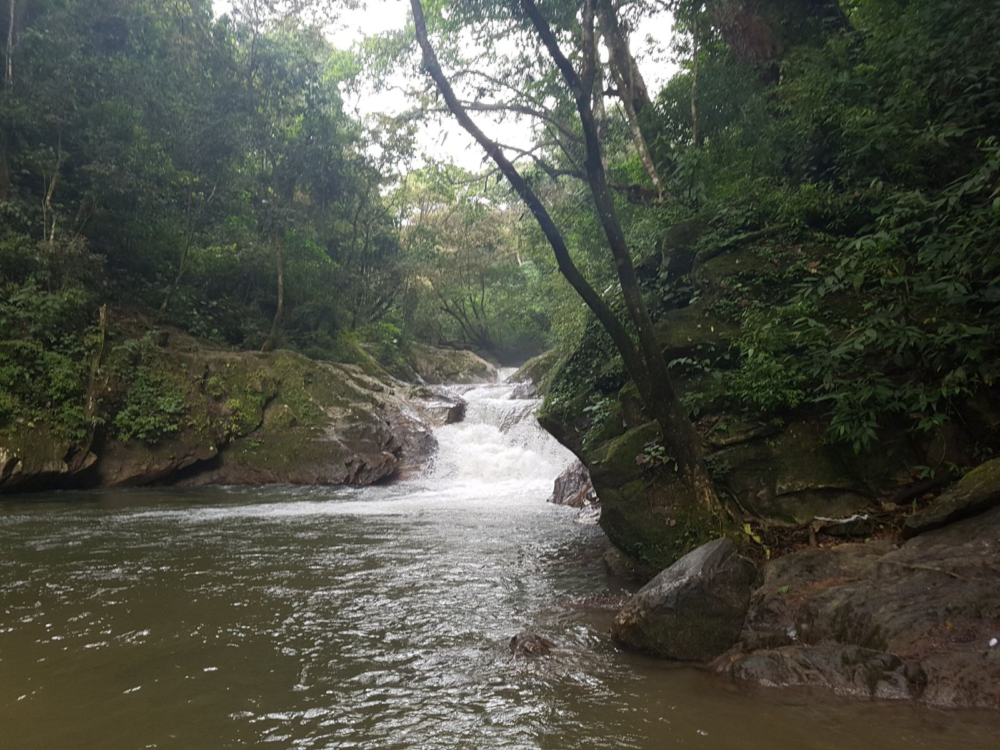
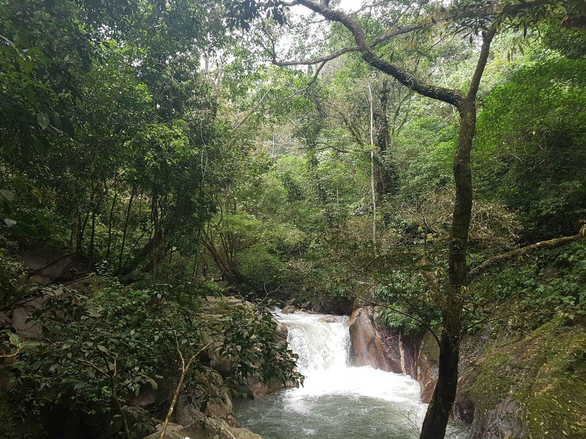
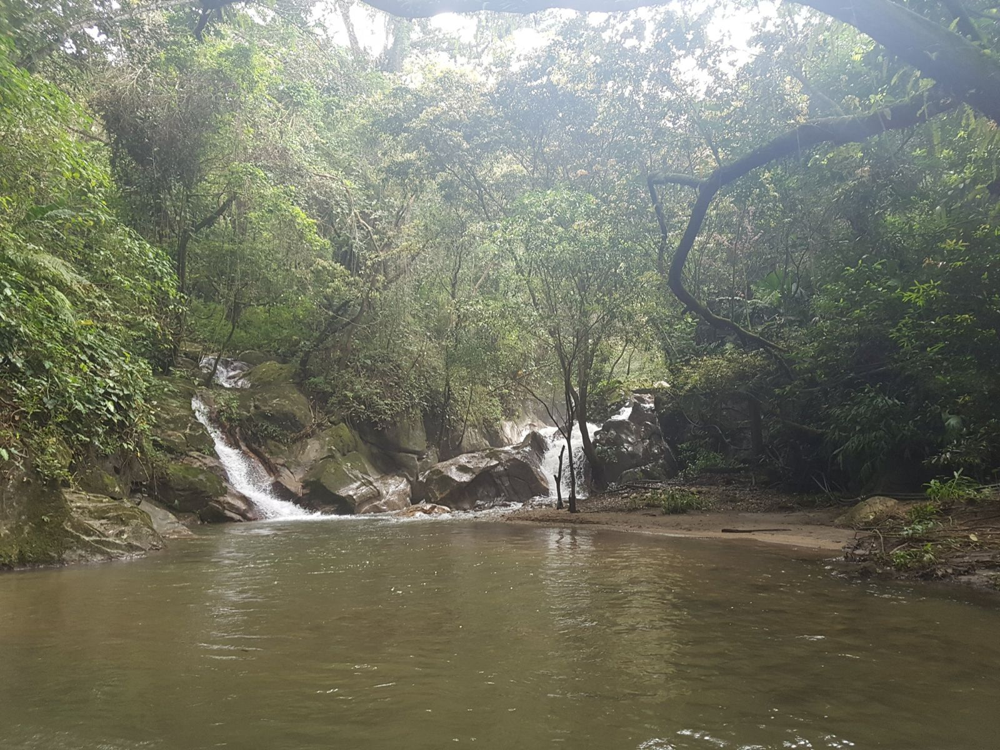
What I found: a December 2025 guide lists these fees. Pozo Azul has a 6,000 peso insurance fee, which the author says applies as of 2025 and was free before. Marinka is 22,000 pesos. Oído del Mundo is free. Two smaller falls charge 10,000 pesos each, and a third shows 3,000 pesos on its sign. The author says some guesthouses ask for more than the sign (Travelers and Dreamers, updated December 24, 2025).
What I did not find: which of these my stream was, and the price of a motorbike tour. The only tour prices I found were for organised day tours that include transport and lunch, which is not the same thing, so I do not quote them.
Coffee, 15:09
At 15:09 I photographed a wooden tray with coffee beans in three stages: pale beans, grey-green ones, and dark roasted ones, with ground coffee at the bottom. I do not remember the farm, whether I took a tour, what I tasted or what it cost. Google Photos has no location for this photo.
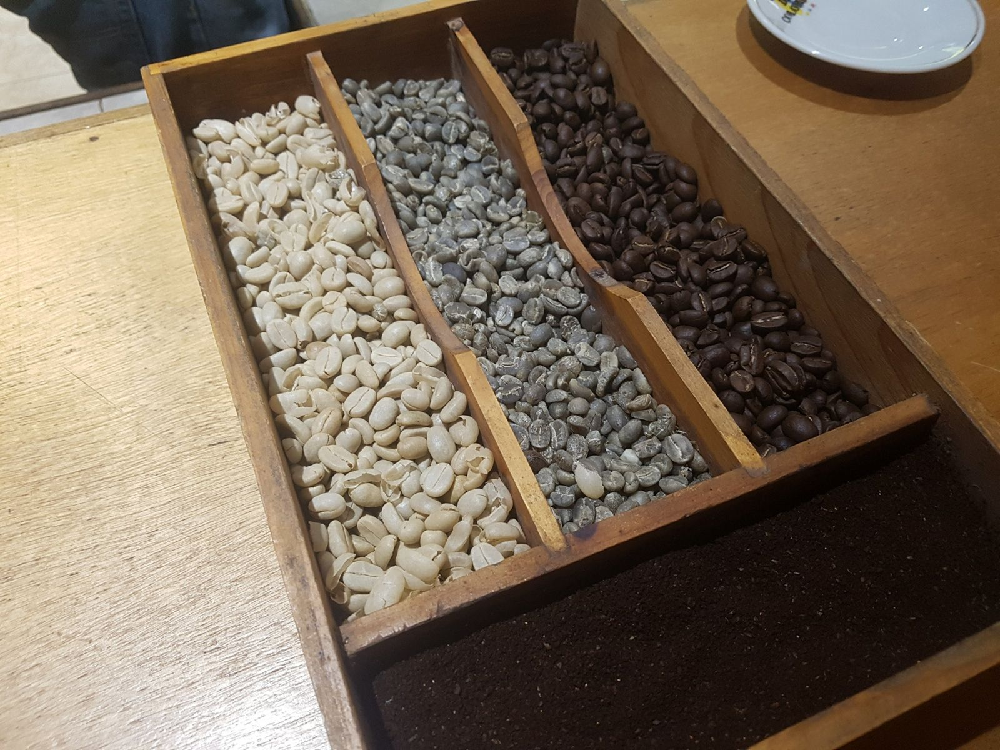
The viewpoints, 16:17 to 17:10
After the coffee I stopped at a series of viewpoints. At 16:17 there was a bank of cloud lying over a forested valley, with white trumpet flowers in the front. At 16:32 I took a view through pine branches, over layers of hills fading into a haze. I checked the 16:32 photo on the map: Google Photos puts it in the hills above the village, in the area called Arimaca, near a hostel called Sierra Minca. That is the map's label, not a sign that I stayed there.
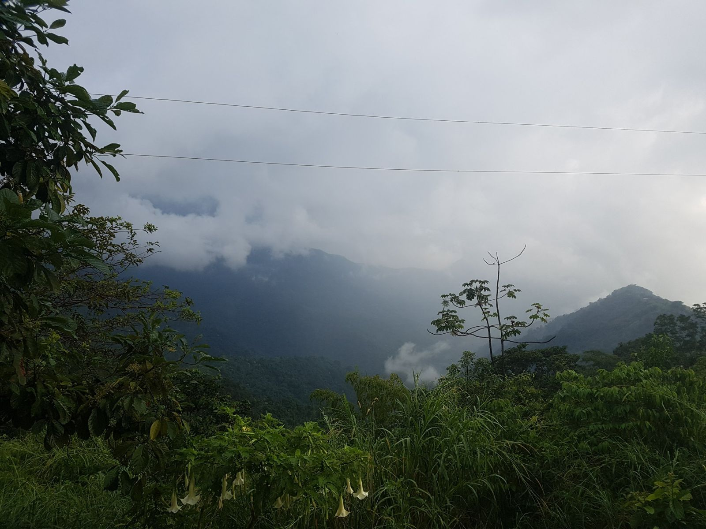
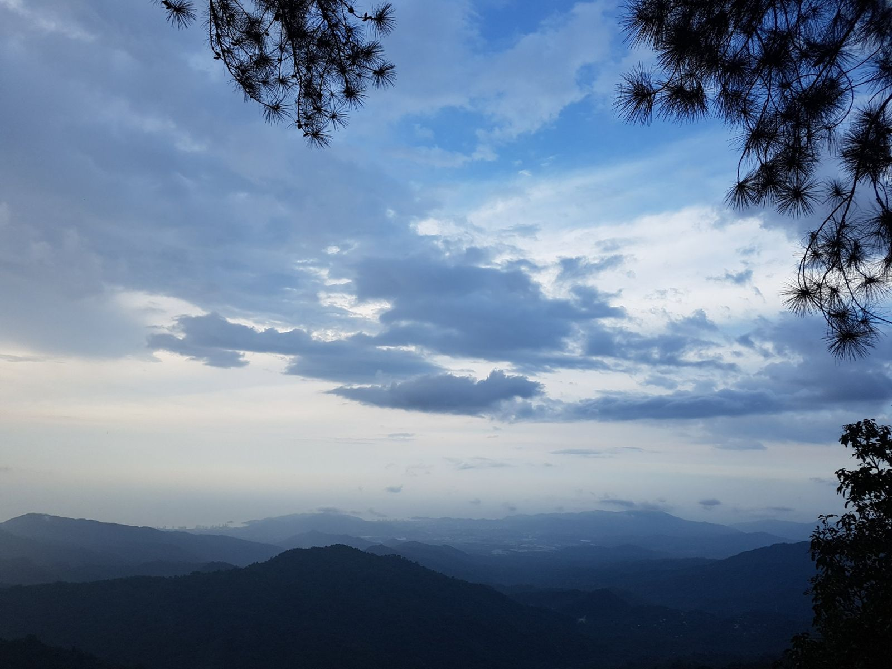
At 17:06 and 17:10 I took three more, from what looks like the roof or the terrace of a building: a dark shingled roof at the bottom, and behind it a long green valley running down to the sea. At the far left the sea shows through the haze, with what looks like a city on the coast. At 17:10 there was also a net hammock of bamboo and rope, with the sun going down behind a ridge.
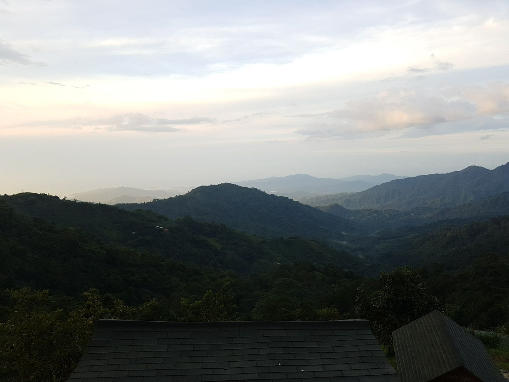
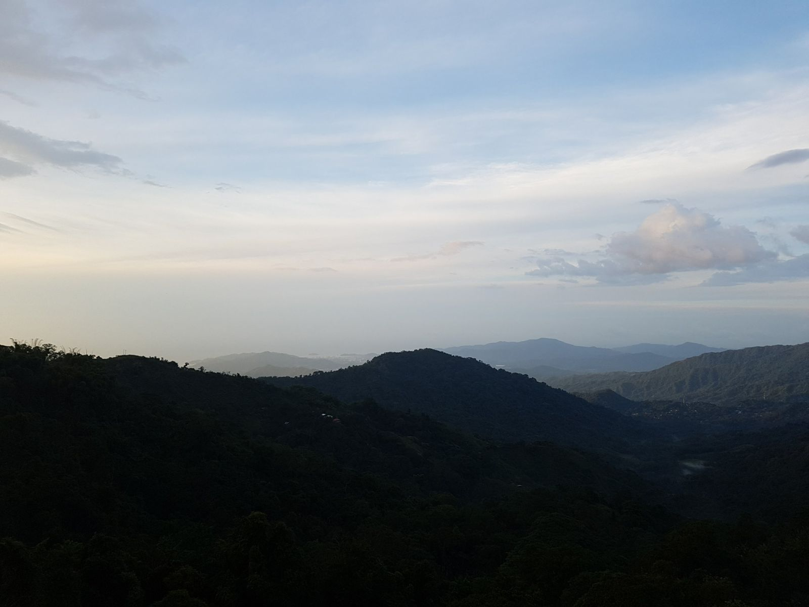
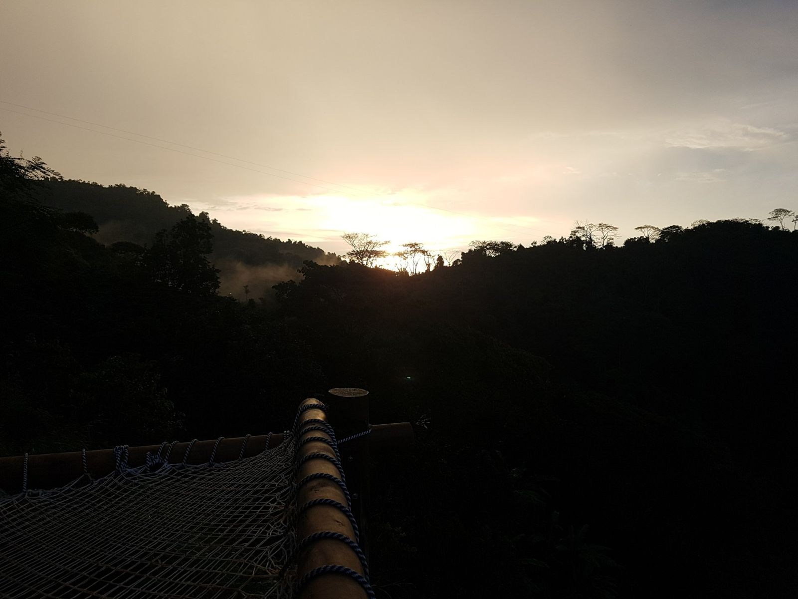
The sunset, 17:36
The last four photos are of the sun going behind a ridge, through the leaves of two trees. They were taken between 17:36 and 17:37, within about a minute of each other. Google Photos puts the one I checked in the Arimaca area, near the Caracolí nature reserve, with a glamping site and a hostel marked on the map nearby. The light is orange, and a little mist rises from the valley below.
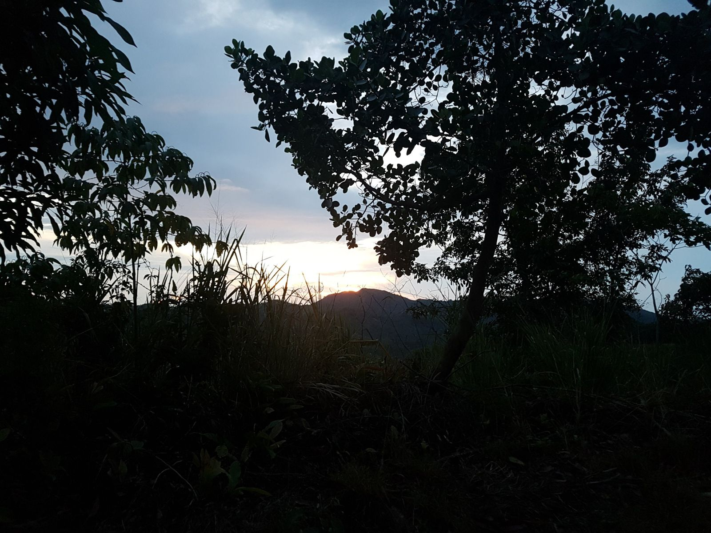
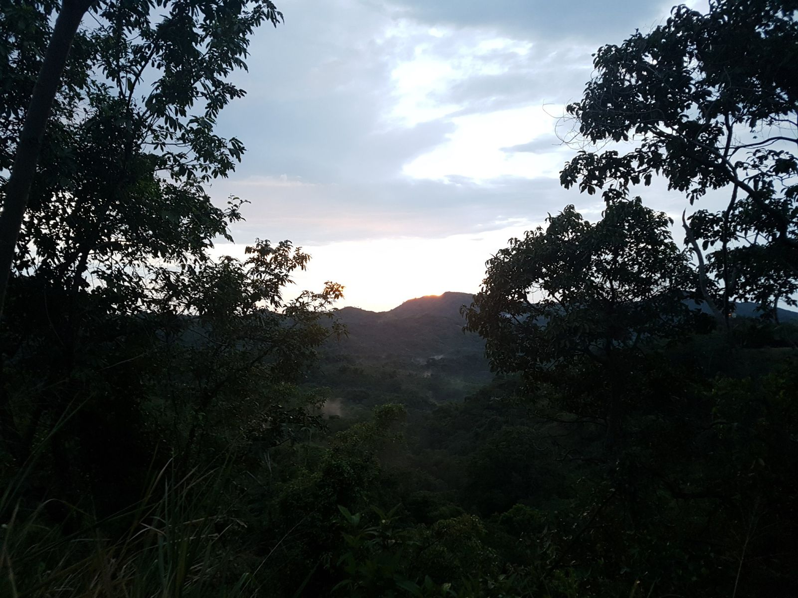
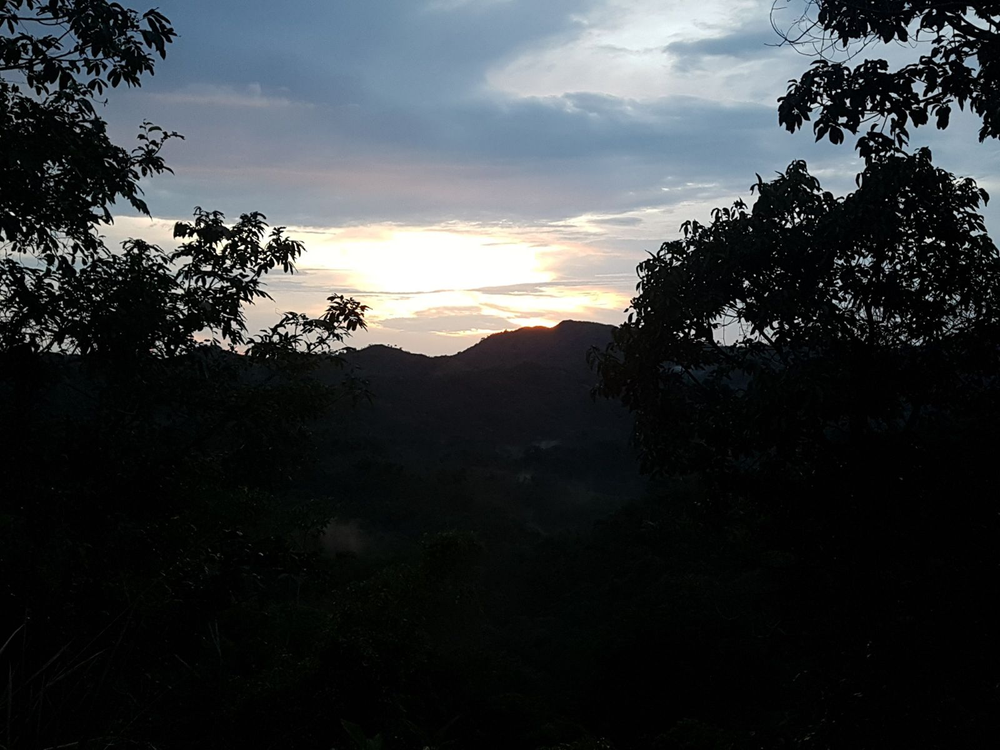
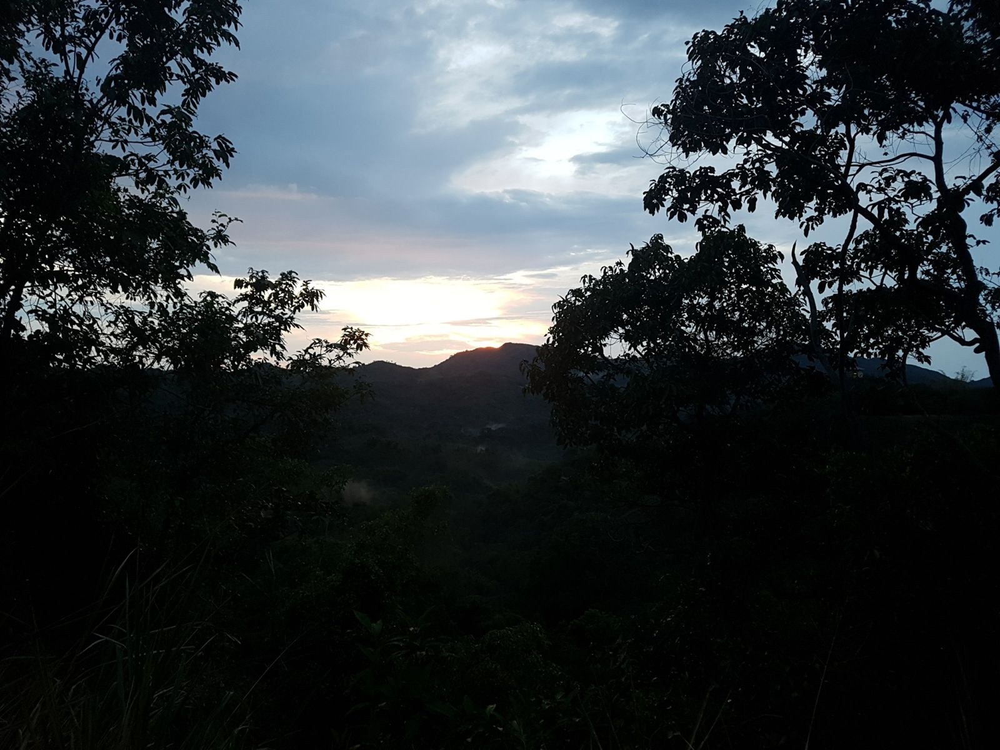
Leaving on the 28th
The morning of the 28th, I left Minca with the hostel owner, in his car. He drove with one hand on the wheel and a beer in the other, and he talked to me the whole way down. I do not remember the road, and I did not film it. On the 28th I was already in Palomino, and the next chapter starts there. I do not remember how far he took me, or how I got from there to Palomino.
What I found: there are two ways. By public transport it is a colectivo to Santa Marta (10,000 pesos, about 45 minutes, to be left at the Mamatoco stop), then a bus from the Sierra Mar office to Palomino (12,000 pesos, about two hours), which leaves you near the D1 supermarket on the main road. By private taxi it is about 350,000 pesos, and the guide suggests booking through your accommodation. Delays from traffic and road works are common. The prices were correct as of December 2025 (Travelers and Dreamers, updated December 24, 2025).
What I did not find: bus timetables, or any price for a lift in a hostel owner's car. That one was a favour, and I do not remember paying.
What I do not remember
I do not remember the name of the hostel, what I paid for it and for the tour, how I got up to Minca, which stream and which coffee farm it was, or the hour I left. I also did not take notes. The photos give the day in order, and nothing more.